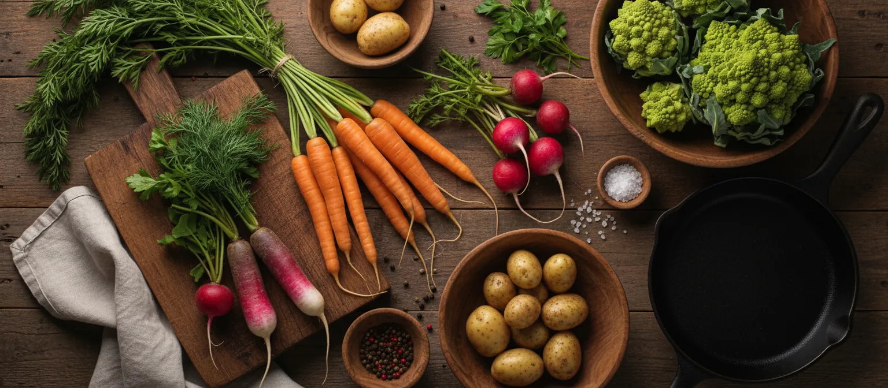
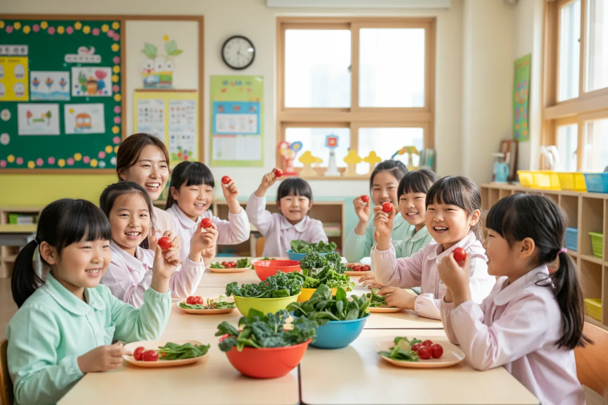
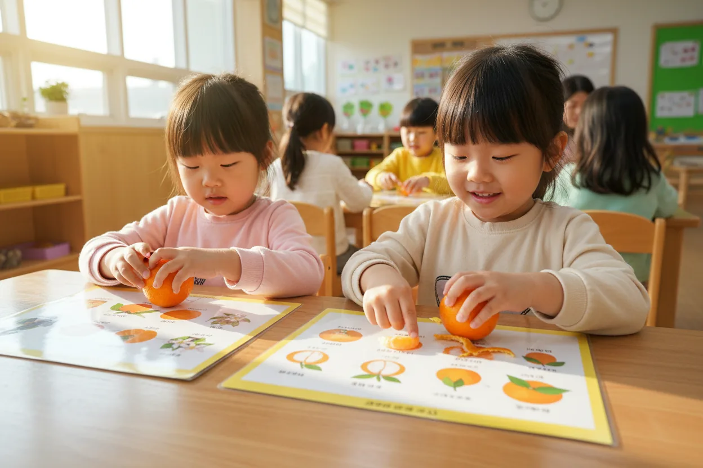
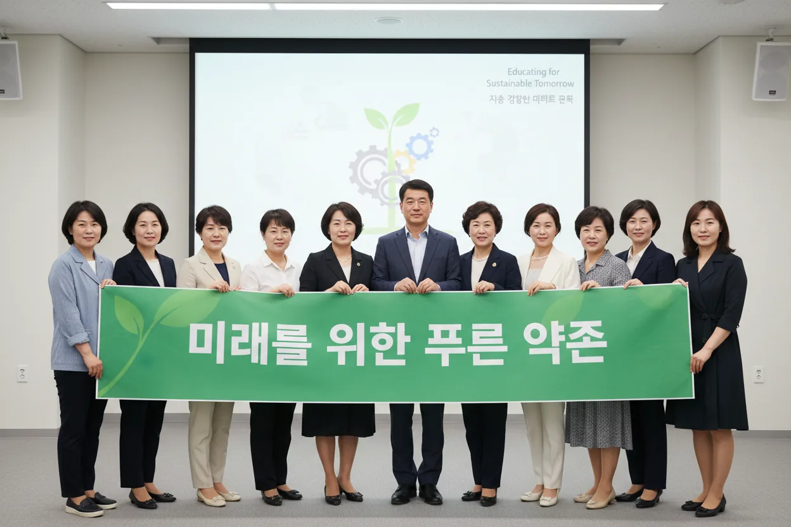
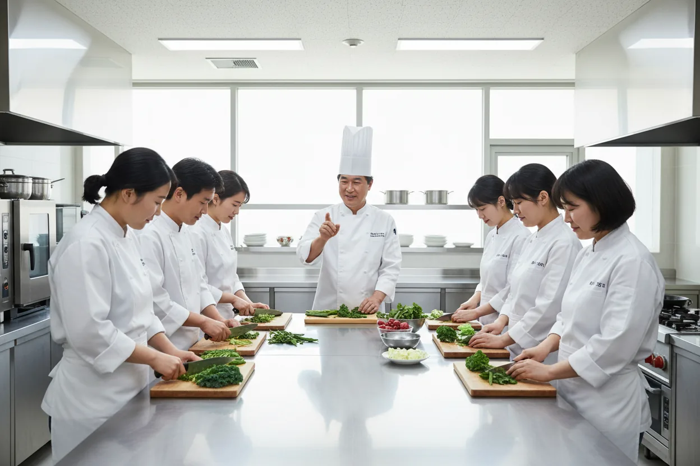
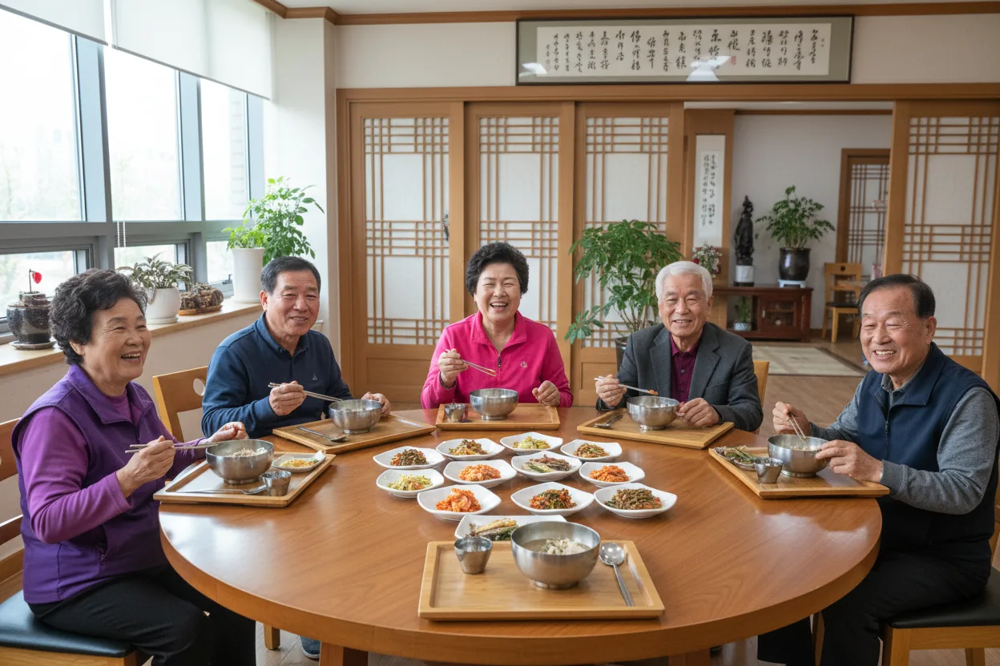
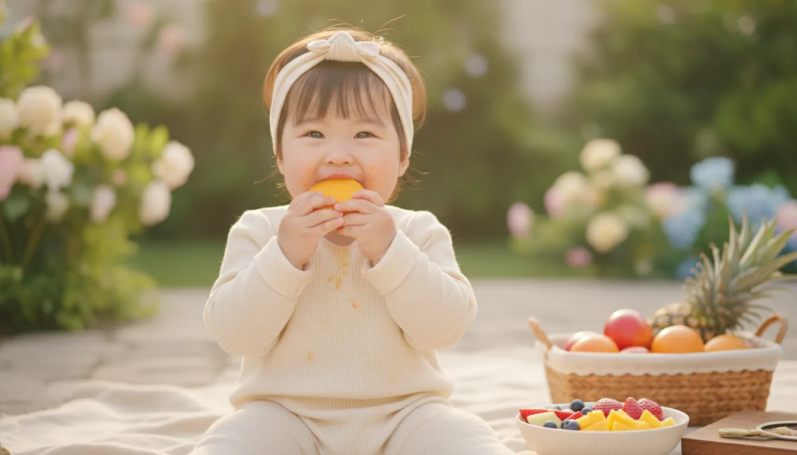
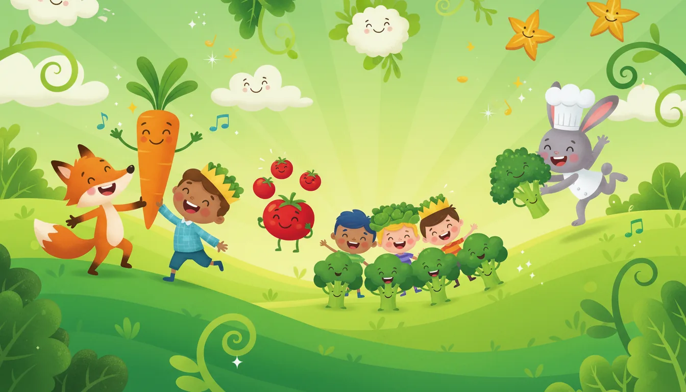
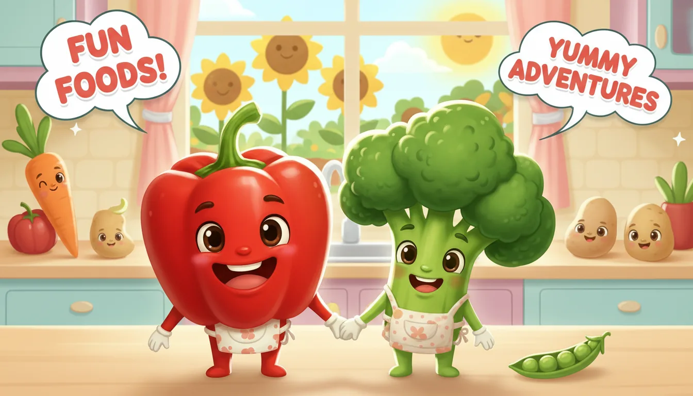
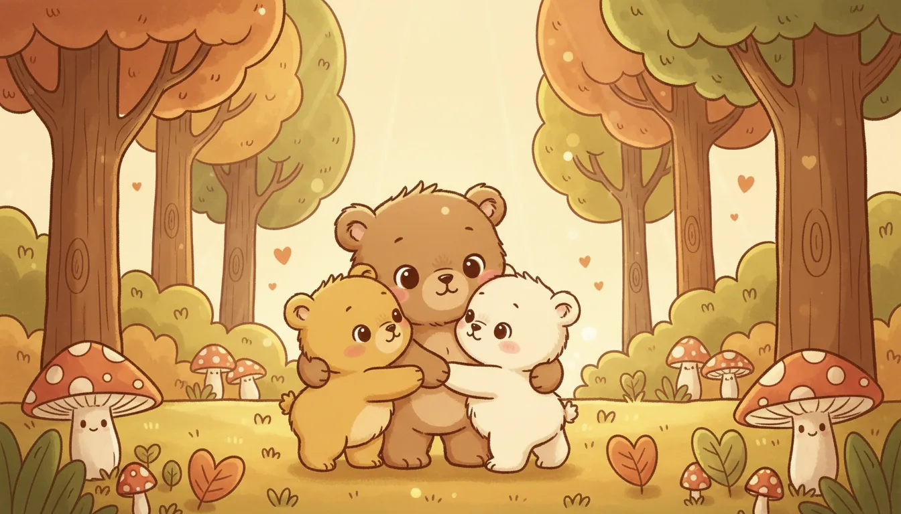

바른먹거리 캠페인
Wholesome Food Campaign
바른먹거리 캠페인
바른먹거리의 중요성을 알리고 바른 식습관을 교육합니다.
바른 먹거리
어릴 때 형성된 입맛이 평생의 건강을 결정합니다. 풀무원의 바른먹거리 캠페인은 나 스스로 먹거리의 중요성을 알고 실천하여 올바른 식습관을 기를 수 있도록 돕는 사회공헌 캠페인입니다. 전문화된 영양학적 지식과 정성 어린 교육을 통해, 아이들과 청소년뿐 아니라 온 가족의 건강한 내일을 만들어 가겠습니다.
어린이 바른먹거리 교육


어릴 때 입맛이 평생의 입맛을 결정합니다.
어린이들이 식품 표시를 확인하여 가공식품 속 첨가물을 스스로 가려내고, 영양소 성분을 분별할 수 있도록 맞춤형 보드게임 및 체험 중심의 교육을 지원합니다. 영유아부터 초등학생까지 각 연령대 눈높이에 맞춘 체계적인 가이드를 제공합니다.
바른먹거리 송 미술놀이
집에서 아이들과 쉽고 재미있게 먹거리의 소중함을 배울 수 있습니다.
바른먹거리 송
음원 다운로드
바른먹거리 율동
영상 다운로드
코코몽 송
음원 다운로드
코코몽 악보
악보 다운로드
성인 바른먹거리 교육


아이의 식습관 길잡이가 될 부모들을 위한 전문 영양/식생활 코칭 교육을 진행합니다. 가정 내에서 실질적으로 건강한 상차림을 구현할 수 있도록 조리 실습 및 유기농 식품 정보 교육을 종합적으로 연계하여 삶의 질을 넓혀 드립니다.
성인 바른먹거리 교육 신청하기시니어 바른먹거리 교육

고령화 시대에 발맞춰 신체 노화와 만성 질환 예방을 위한 영양 식사법 가이드를 제공합니다. 염분 섭취를 줄이고 필수 소화 단백질을 보강하며, 혼자서도 안전하게 조리할 수 있는 시니어 간편 균형 레시피 실습을 지원합니다.
TV로 만나는 바른먹거리 캠페인


온라인 바른먹거리 교육

네이버, 디즈니, 키자니아도 함께 합니다.

어린이들이 좋아하는 인기 캐릭터 및 네이버 해피빈 온라인 플랫폼, 키자니아 직업 체험 프로그램 등 다양한 협업 채널을 다각도로 활용하여 재미있고 친숙한 교육 콘텐츠를 배포하며 실효성 있는 실천 방향을 전파합니다.